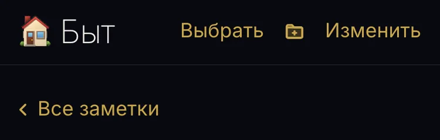
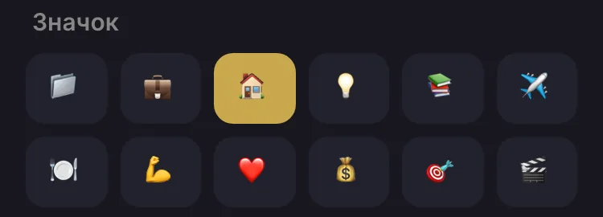
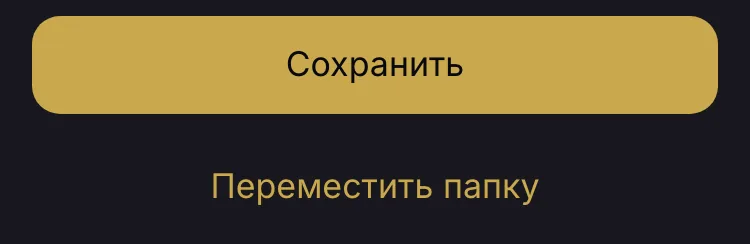
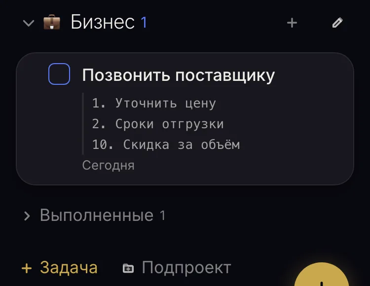
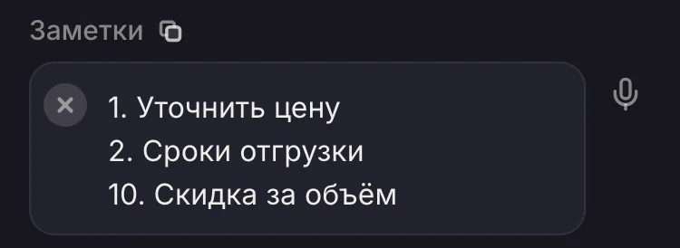
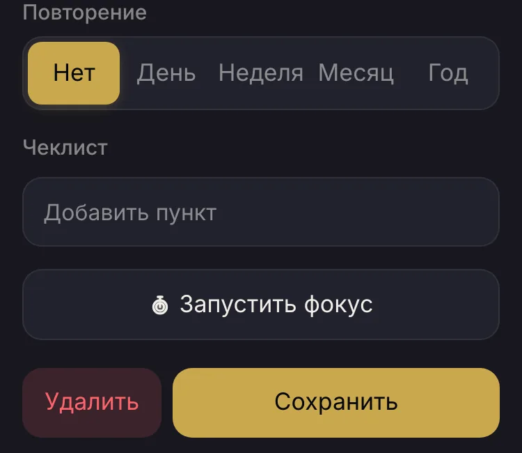
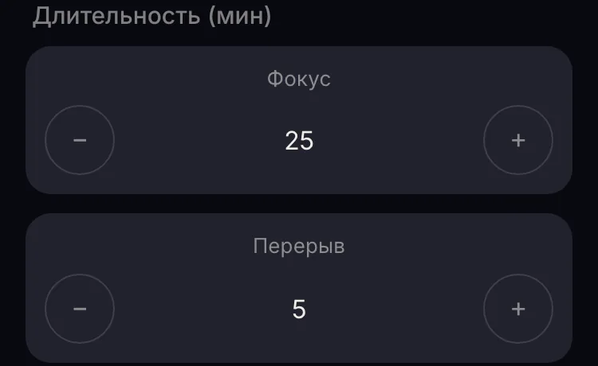
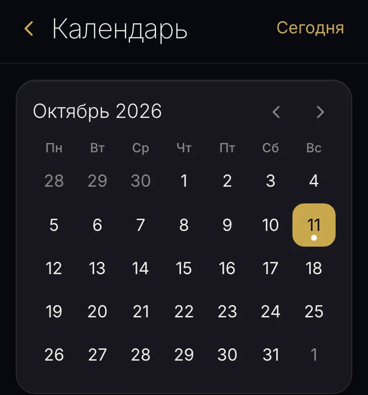

Как сейчас — всё 17px, вес 400
Заметки в папке: «Выбрать», «Изменить» и «Все заметки»

Шторка папки: значки (text-lg)

Шторка папки: «Сохранить» (Button) и «Переместить папку»

Задачи: «Выполненные», «+ Задача», «Подпроект»

Шторка задачи: поле заметок (font-mono)

Шторка задачи: «Повторение», «Запустить фокус», «Удалить», «Сохранить»

«Фокус»: минуты (text-2xl font-extralight)

Календарь: «Сегодня» в шапке и числа дней

Настройки: тема, «Включить»; списки остаются 16px (iOS)
Настройки: «Включить синхронизацию» (Button)
Семейная задача: «Кому» и «Приоритет»